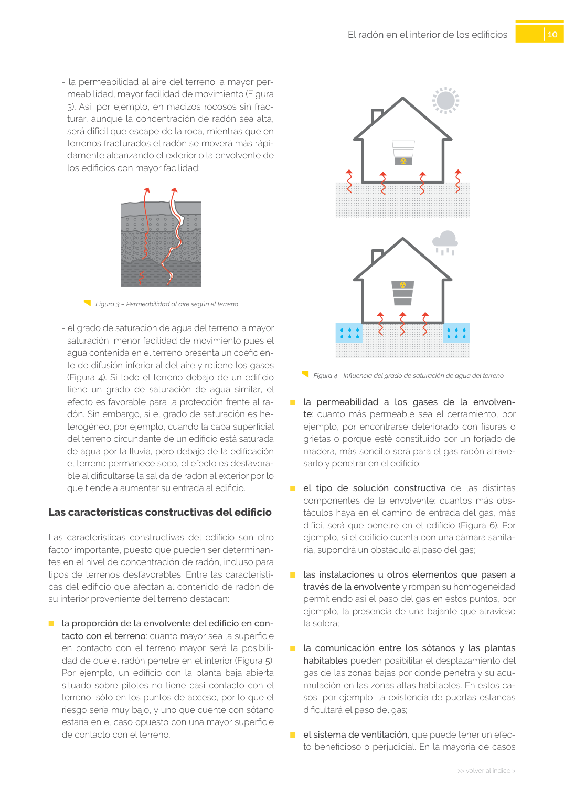

Guia de rehabilitacion frente al radon · edición sin-fecha · capa guia
Documento GUIA-PDF-23d2f2198c3b · SHA-256 del PDF 6765d0c34c51fbe193c3ed0c1378b710f98f086d16e2b68fc28ed36e143fdaea
Página física 10 de 24.
Copia fiel del PDF fuente · Fuente oficial
Ficha de la disposición en la fuente oficial
Créditos y autoría en el PDF fuente. Reproducción con cita de fuente y autores.
Permiso literal: Se permite la reproducción total o parcial del contenido de este do Edición actual: septiembre 2020 cumento siempre y cuando se cite la fuente original y a sus autores.
2
Este documento ha sido elaborado por el Instituto de ciencias
de la construcción Eduardo Torroja (IETcc) bajo la supervisión
de la Dirección General de Agenda Urbana y Arquitectura del
Ministerio de Transportes, Movilidad y Agenda Urbana (MITMA).
SECRETARÍA GENERAL DE
AGENDA URBANA Y VIVIENDA MINISTERIO GOBIERNO El IETcc, perteneciente al Consejo Superior de Investigaciones DE TRANSPORTES, MOVILIDAD
DE ESPAÑA Y AGENDA URBANA DIRECCIÓN GENERAL DE
AGENDA URBANA Y ARQUITECTURA Científicas (CSIC), es el centro de investigación en edificación
de referencia en España. La Unidad de Calidad en la Construc
ción del IETcc asesora al MITMA en la elaboración del Código
MINISTERIO GOBIERNO DE CIENCIA Técnico de la Edificación que, desde el año 2019, cuenta con la DE ESPAÑA E INNOVACIÓN
sección HS6 Protección frente a la exposición al radón.
Dirección y Coordinación:
Ministerio de Transportes, Movilidad y Agenda Urbana
Isabel Marcos Anasagasti
Esta publicación está formada por una serie de documentos cuyo Raquel Lara Campos
objetivo es constituir una herramienta de ayuda para el diseño de Eduardo González de Prado
soluciones de protección frente al radón: Instituto de ciencias de la construcción Eduardo Torroja CSIC
Pilar Linares Alemparte
■ Guía de rehabilitación frente al radón
Fichas de soluciones: Autoras:
Pilar Linares Alemparte
A: De aislamiento del edificio Sonia García Ortega
■ Solución A1. Barrera frente al radón
■ Solución A1-1. Barrera frente al radón. Encuentros Colaboradoras:
■ Solución A2. Sellado de fisuras, grietas, encuentros y juntas Virginia Sánchez Ramos
■ Solución A3. Puertas estancas Karina Angélica García Pardo
■ Solución A4. Creación de sobrepresión
Edita:
B: De reducción del radón antes de que penetre en los locales Centro de Publicaciones Secretaría General Técnica
a proteger Ministerio de Transportes, Movilidad y Agenda Urbana©
■ Solución B1. Ventilación del espacio de contención: cá Entidad colaboradora:
mara de aire Consejo Superior de Investigaciones Científicas · CSIC
■ Solución B2. Ventilación del espacio de contención: loca Ministerio de Ciencia e Innovación
les no habitables
■ Solución B3. Despresurización del terreno Catálogo de publicaciones de la Administración General
del Estado: publicacionesoficiales.boe.es
C: De reducción del radón tras penetrar en los locales a proteger
■ Solución C1. Ventilación de los locales habitables Centro virtual de publicaciones del Ministerio de Transpor
tes, Movilidad y Agenda Urbana: www.mitma.gob.es
Fichas de ejemplos:
Página web del Código Técnico de la Edificación:
■ Ejemplo A1+B3. Barrera frente al radón + despresurización www.codigotecnico.org
con red de tubos
■ Ejemplo A2+B1. Sellado + ventilación de la cámara sanitaria Maquetación y diseño gráfico:
■ Ejemplo A2+B3. Sellado + despresurización con red de tubos Lapizmente. Estrategia • Diseño Gráfico
■ Ejemplo A2+C1. Sellado + ventilación mecánica de los loca- Los contenidos o ideas recogidas en este documento pertenecen a
les habitables sus autores. Este documento está basado en el conocimiento dispo
nible en el momento de su publicación. No se aceptará por las institu
Publicación completa: ciones ni los autores implicados responsabilidad de ningún tipo por el
ISBN: 978-84-498-1045-9 uso de estas recomendaciones. Las figuras tienen carácter ilustrativo
NIPO: 796-20-136-5 y no deben interpretarse como detalles constructivos.
1ª edición: septiembre 2020 Se permite la reproducción total o parcial del contenido de este do
Edición actual: septiembre 2020 cumento siempre y cuando se cite la fuente original y a sus autores.
>> volver al índice >Formato: Texto de la página (Markdown)
10 >> volver al índice > El radón en el interior de los edificios Figura 4 - Influencia del grado de saturación de agua del terreno ■ la permeabilidad a los gases de la envolven te: cuanto más permeable sea el cerramiento, por ejemplo, por encontrarse deteriorado con fisuras o grietas o porque esté constituido por un forjado de madera, más sencillo será para el gas radón atrave sarlo y penetrar en el edificio; ■ el tipo de solución constructiva de las distintas componentes de la envolvente: cuantos más obs táculos haya en el camino de entrada del gas, más difícil será que penetre en el edificio (Figura 6). Por ejemplo, si el edificio cuenta con una cámara sanita ria, supondrá un obstáculo al paso del gas; ■ las instalaciones u otros elementos que pasen a través de la envolvente y rompan su homogeneidad permitiendo así el paso del gas en estos puntos, por ejemplo, la presencia de una bajante que atraviese la solera; ■ la comunicación entre los sótanos y las plantas habitables pueden posibilitar el desplazamiento del gas de las zonas bajas por donde penetra y su acu mulación en las zonas altas habitables. En estos ca sos, por ejemplo, la existencia de puertas estancas dificultará el paso del gas; ■ el sistema de ventilación, que puede tener un efec to beneficioso o perjudicial. En la mayoría de casos - la permeabilidad al aire del terreno: a mayor per meabilidad, mayor facilidad de movimiento (Figura 3). Así, por ejemplo, en macizos rocosos sin frac turar, aunque la concentración de radón sea alta, será difícil que escape de la roca, mientras que en terrenos fracturados el radón se moverá más rápi damente alcanzando el exterior o la envolvente de los edificios con mayor facilidad; Figura 3 – Permeabilidad al aire según el terreno - el grado de saturación de agua del terreno: a mayor saturación, menor facilidad de movimiento pues el agua contenida en el terreno presenta un coeficien te de difusión inferior al del aire y retiene los gases (Figura 4). Si todo el terreno debajo de un edificio tiene un grado de saturación de agua similar, el efecto es favorable para la protección frente al ra dón. Sin embargo, si el grado de saturación es he terogéneo, por ejemplo, cuando la capa superficial del terreno circundante de un edificio está saturada de agua por la lluvia, pero debajo de la edificación el terreno permanece seco, el efecto es desfavora ble al dificultarse la salida de radón al exterior por lo que tiende a aumentar su entrada al edificio. Las características constructivas del edificio Las características constructivas del edificio son otro factor importante, puesto que pueden ser determinan tes en el nivel de concentración de radón, incluso para tipos de terrenos desfavorables. Entre las característi cas del edificio que afectan al contenido de radón de su interior proveniente del terreno destacan: ■ la proporción de la envolvente del edificio en con tacto con el terreno: cuanto mayor sea la superficie en contacto con el terreno mayor será la posibili dad de que el radón penetre en el interior (Figura 5). Por ejemplo, un edificio con la planta baja abierta situado sobre pilotes no tiene casi contacto con el terreno, sólo en los puntos de acceso, por lo que el riesgo sería muy bajo, y uno que cuente con sótano estaría en el caso opuesto con una mayor superficie de contacto con el terreno.

Datos candidatos: compruebe celdas y notas en el PDF.